大動脈弁輪拡大術（AAE）テクニカル・アトラス
— Nicks / Manouguian / Konno / Y-incision を「日本人の小さな体」の視点で総括する
狭小大動脈弁輪に対する弁輪拡大術（AAE: Aortic Annulus Enlargement）は、古典 3 法（Nicks 1970 / Manouguian 1979 / Konno 1975）に、2020 年以降の Y-incision（Yang, University of Michigan） とその変法が加わり、選択肢が一気に広がった。本稿は「それぞれの術式はどう行うのか（how-to）」「どれだけ拡大でき、何が固有のリスクか」「では小体格・狭小弁輪の日本人にはどれが良いのか」を、原著と最新比較研究・メタ解析に基づいて 1 枚に束ねた実践アトラスである。
1. なぜ弁輪を拡げるのか — PPM と小体格という文脈
狭小弁輪に無理に小径弁を押し込むと、体格に対して弁の有効弁口面積（EOA）が不足し、患者-人工弁ミスマッチ（PPM: prosthesis-patient mismatch） が生じる。indexed EOA（iEOA = EOA/BSA）が ≤0.85 cm²/m² で中等度、≤0.65 で重度 と定義され（Pibarot, Heart 2006）、重度 PPM は長期生存を悪化させる（Head, EHJ 2012 メタ解析）。AAE は「弁輪を物理的に拡げ、より大径・高 EOA の弁を植える」ことで PPM を回避する戦略である。
歴史的な出発点は PPM 概念以前にさかのぼる。Nicks（1970）は「size 8A 弁群の死亡率 45% に対し、弁輪を拡げて size 9 を入れた群は 9%」という観察を報告し、「小さい弁を強行すると予後が悪い」 という AAE の原仮説を最初に明文化した（Nicks, Thorax 1970, PMC472719）。
この文脈は日本人・アジア人でこそ切実である。小さな弁輪・小さな大動脈基部・低い BMI という解剖のため、欧米で標準の 23–25mm 弁が入らない症例が多い。一方で「小さいから拡げるべき」という単純な図式が本当に予後を改善するかは、後述（§7・§8）のとおり慎重な検討を要する。
最大のメタ解析（Tanaka 2024, 全 216,654 例）では、AAE は重度 PPM を確かに減らす（RR 0.61）が、中期死亡は HR 1.03 と改善しない。AAE の目的は "PPM 回避" であって "延命" が保証されているわけではない、という前提を最初に押さえておきたい。
2. 術式を理解するための大動脈基部解剖
すべての AAE は「大動脈弁輪のどの線維性/筋性の壁を、どの方向へ切り、どこにパッチを当てるか」で決まる。まず術者視点の解剖ランドマークを確認する。
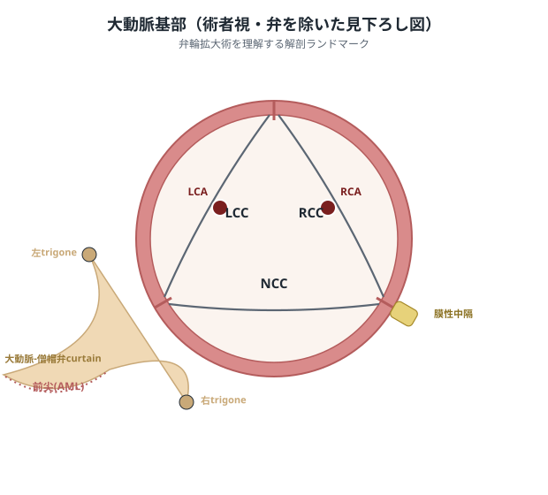
図 2-1. 大動脈基部を弁を外して見下ろした術者視の模式図（自作）。3 つの Valsalva 洞（NCC = 無冠尖 / LCC = 左冠尖 / RCC = 右冠尖）、左右冠動脈口（LCA/RCA）、そして拡大術の鍵となる 3 つの「切ってよい/切ると危ない」場所 —— 大動脈-僧帽弁カーテン（aortomitral curtain）、それを挟む左右の線維性三角（fibrous trigone）、膜性中隔（membranous septum） の位置関係を示す。
- NCC（無冠尖）の後方は僧帽弁前尖へ連続する線維性の区域で、ここが古典的 AAE の主戦場。冠動脈口が無いため後方への切開が比較的安全。
- LCC–NCC 交連の直下に大動脈-僧帽弁カーテンが広がり、その左右端を左・右線維性三角が支える。ここを「どこまで切るか」が拡大量とMRリスクのトレードオフを決める。
- 膜性中隔は NCC–RCC 交連付近にあり、房室伝導束（His 束）が走る。ここへ及ぶ切開（Konno など）は伝導障害のリスクを負う。
- 前方（RCC–LCC 交連〜右室流出路） は Konno が向かう方向。心室中隔を切るため大きく拡がるが侵襲は最大。
3. 4 術式が切り込む「場所」と「量」— 一望比較
古典 3 法と Y-incision は、同じ弁輪を異なる方向へ切る 4 つの戦略と理解すると整理しやすい。
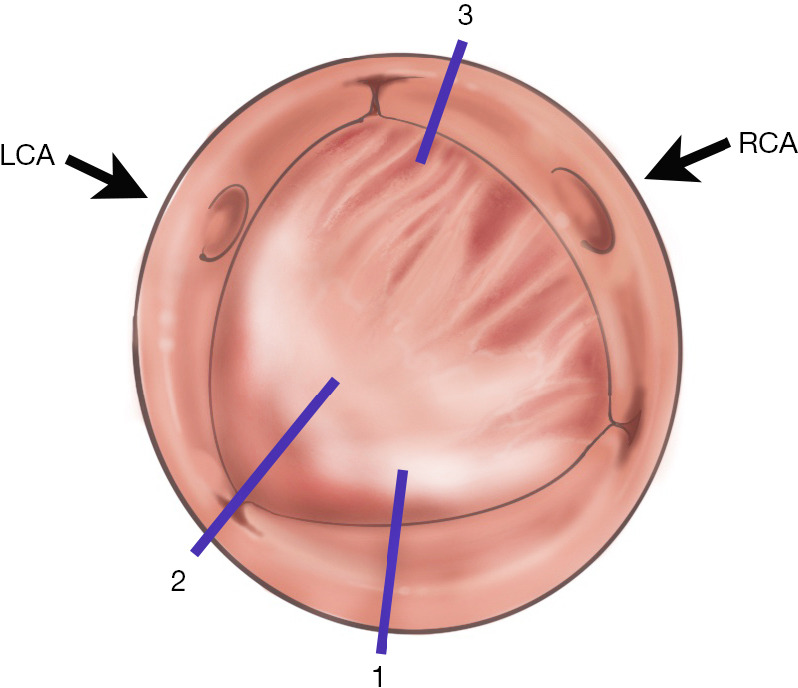
出典: Jahanyar J, Said S, de Kerchove L, et al. Aortic root anatomy: insights into annular and root enlargement techniques. Ann Cardiothorac Surg 2024;13(3):244-254 ([PMC11148763](https://pmc.ncbi.nlm.nih.gov/articles/PMC11148763/)). CC BY-NC-ND 4.0 に基づき原図を改変せず掲載。
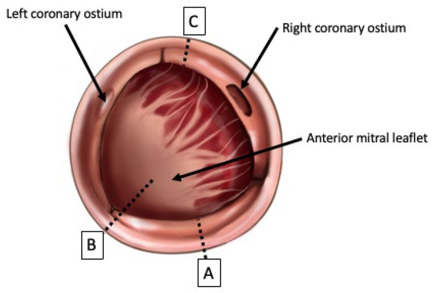
出典: Fazmin IT, Ali JM. Prosthesis-patient mismatch and aortic root enlargement. J Cardiovasc Dev Dis 2023;10(9):373. [doi:10.3390/jcdd10090373](https://doi.org/10.3390/jcdd10090373). CC BY 4.0。
後方（僧帽弁方向）に切る Nicks/Manouguian/Y-incision と、前方（心室中隔方向）に切る Konno という 2 つの向きが、すべての AAE の基本骨格である。
拡大できる「量」は術式ごとに大きく異なる。
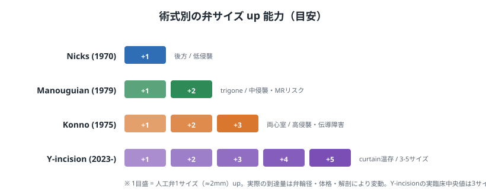
図 3-2. 到達しうる弁サイズ up の目安（自作）。1 目盛 = 人工弁 1 サイズ（≈2mm）。侵襲度と拡大量はおおむね比例するが、Y-incision は「カーテン温存で低侵襲のまま 3–5 サイズ」という点で従来のトレードオフを崩した、というのが提唱者の主張である。
| 術式 | 切開の到達範囲 | 拡大量の目安 | 固有リスク | 主な適応 |
|---|---|---|---|---|
| Nicks (1970) | NCC → 僧帽弁輪起始（後方限局） | 約 1 サイズ | 拡大量が限定的 | 軽度の狭小・追加拡大を最小限にしたい時 |
| Manouguian (1979) | LCC–NCC 交連 → 三角貫通 → 前尖起始 約 1cm | 1–2 サイズ（原著で 15mm） | 僧帽弁機能障害（MR）、パッチ破断 | 中等度の狭小、AVR±MVR |
| Konno (1975) | 前方 → 心室中隔 → 右室流出路 | 原径の 約 2 倍 | 房室ブロック・伝導障害・高侵襲 | 先天性の超狭小弁輪（弁輪-大動脈低形成） |
| Y-incision (2023–) | 交連 → 両三角へ Y 字（カーテン温存） | 3–5 サイズ | 経験依存、short-curtain 例での central MR | PPM を確実に消したい成人 SAVR |
以下、各術式の「やり方」を順に見ていく。
4. 各術式の手技（How-to）
4.1 Nicks 法（1970）— 後方限局・低侵襲の原点
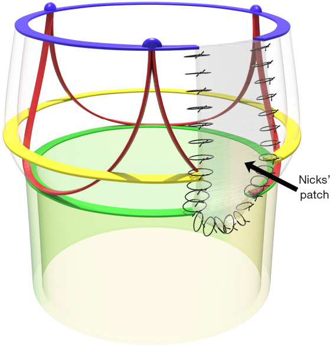
出典: Jahanyar J, et al. Ann Cardiothorac Surg 2024;13(3):244-254 ([PMC11148763](https://pmc.ncbi.nlm.nih.gov/articles/PMC11148763/)). CC BY-NC-ND 4.0。
手技のステップ
- 大動脈横切開（transverse aortotomy）を行い、狭小弁輪を確認。
- 切開線を NCC の中央（nadir）から後方・下方へ、僧帽弁前尖起始部の手前まで 延長する。カーテン深部・前尖本体には入らない。
- 生じた涙滴型の欠損に、幅を持たせたパッチ（Dacron / 自己心膜 / ウシ心膜）を連続縫合で当てる。
- パッチにより拡大した弁輪に、1 サイズ大きい弁を supra-annular に留置。
- パッチ上縁を大動脈切開の閉鎖に取り込んで止血。
メリット / デメリット
- ✅ 手技が単純・追加侵襲が小さい・伝導路や前尖から離れており安全域が広い。
- ✅ 心膜パッチを使えば止血が容易。
- ⚠️ 拡大量が 1 サイズ程度に限られる。19mm→21mm がやっと、という症例では「拡げたつもりが依然 PPM」になりうる。
- ⚠️ 大きな upsize が必要な症例には力不足。
Masaki ら（宮城県立こども病院／岩手医大, Pediatr Cardiol 2026）は 9 歳男児（BSA 1.0 m²、弁輪 21mm）に small-Y 変法の Nicks（LCC 側 5mm・NCC 側 7mm の小切開＋幅 12mm の J-Graft パッチ）で 21mm St Jude Regent を留置し 3 年無症状。Yang の 3–5 サイズ up は小児では過剰侵襲で、LCC 広範切開は左冠動脈の kinking、NCC 広範切開は長期の僧帽弁劣化を招きうると批判し、"1 size up・最小侵襲" を推奨した。同時に「日本人男性で 19mm 機械弁は PPM リスクがあり 21mm 以上を目指すべき」と明言している点は、後述の術式選択（§8）に直結する。
4.2 Manouguian 法（1979）— 三角を貫き前尖へ、拡大量とMRリスクの交換
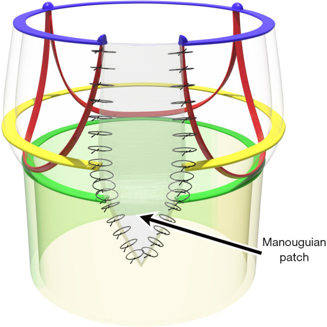
出典: Jahanyar J, et al. Ann Cardiothorac Surg 2024;13(3):244-254 ([PMC11148763](https://pmc.ncbi.nlm.nih.gov/articles/PMC11148763/)). CC BY-NC-ND 4.0。
手技のステップ（Manouguian & Seybold-Epting, JTCVS 1979）
- 大動脈切開を LCC–NCC 交連へ向けて 延長。
- 交連から左右線維性三角を貫き、僧帽弁前尖の起始部まで約 1cm 切り込む。これで弁輪が V 字に開大する。
- 紡錘型の Dacron または心膜パッチを V 字欠損に縫着。前尖側の縫着は「初期部まで」に留め、appositional portion（弁尖可動部）まで及ばせないのが要点。
- 拡大弁輪に Björk-Shiley No.23–27 相当（原著）を留置。原径 15–25mm を約 15mm 拡大できた。
- 必要に応じて左房切開を併用し、僧帽弁・左房壁も同じパッチで再建（AVR+MVR 併施時）。
メリット / デメリット
- ✅ Nicks より確実に 1–2 サイズ 拡大でき、AVR+MVR の同時再建にも応用が利く。
- ⚠️ 僧帽弁機能障害（MR）が固有リスク。原著自身が「前尖初期部まで約 1cm なら永続障害はないが、可動部まで延長するとパッチ収縮・前尖変形による機能障害は否定できない」と安全閾値を明示。
- ⚠️ 左房・僧帽弁前尖に及ぶため出血・再建の手間が増える。
Malfitano ら（UNC, J Card Surg 2022）は、大動脈-僧帽弁カーテンを切開せず Y 字切開＋パッチで拡大する modified Manouguian を 13 例に施行。手術死亡 0%・PPM 0%・1–2 サイズ upsize 100% と良好だが、size 19 を 4 例（31%）で留置し 1 例は推奨 size 21 に届かず。「カーテン温存＝安全だが拡大量は控えめ」という保守的 AAE の限界も示した。この発想が次の Y-incision へと橋渡しされる。
4.3 Konno 法（1975）— 大動脈-心室形成、日本発の "最大拡大"
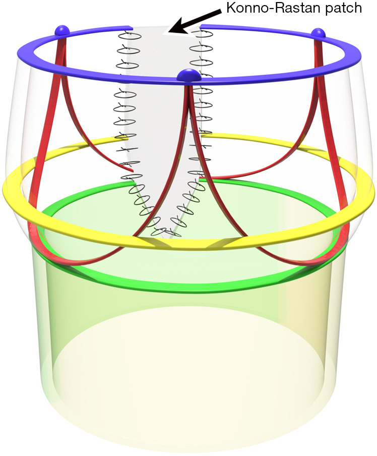
出典: Jahanyar J, et al. Ann Cardiothorac Surg 2024;13(3):244-254 ([PMC11148763](https://pmc.ncbi.nlm.nih.gov/articles/PMC11148763/)). CC BY-NC-ND 4.0。
小体格・小弁輪に対しては、中隔切開を最小限にした Mini-Konno が現実的な選択肢になる。以下は大阪の Yoshioka らによる小弁輪症例の手術ステップ（CC BY, オープンアクセス）。
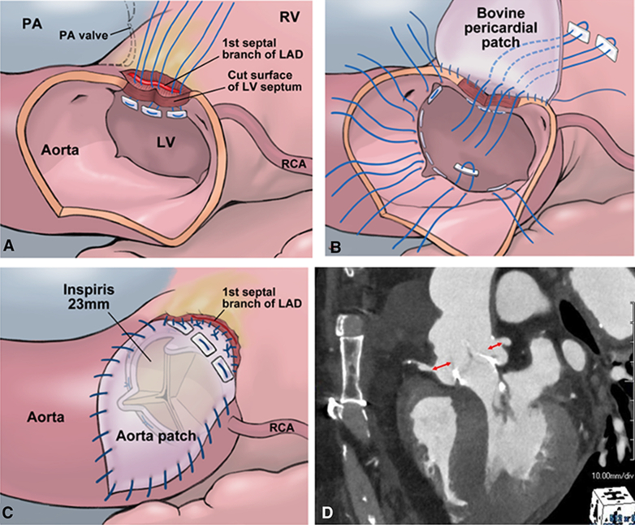
出典: Yoshioka D, Kawamura A, et al. Mini-Konno procedure for aortic stenosis with small aortic annulus. JTCVS Tech 2026. [doi:10.1016/j.xjtc.2025.09.030](https://doi.org/10.1016/j.xjtc.2025.09.030). CC BY 4.0。
手技のステップ（Konno et al., 東京女子医大, JTCVS 1975）
- 前方の大動脈縦切開を、右冠尖付近から心室中隔へ向けて延長。
- 切開を心室中隔筋層に入れ、狭小な流出路を縦に開大。右室流出路（RVOT）まで達する。
- 大きな Dacron パッチで 大動脈・左室流出路側を再建（弁を留置する土台を作る）。
- 拡大した弁輪に人工弁を留置（原著は原径 11mm/13mm の弁輪に Björk-Shiley No.19–21 を留置）。
- 第 2 のパッチで右室流出路側を再建し、RVOT の連続性を回復。
メリット / デメリット
- ✅ 拡大量が最大（原径の約 2 倍）。市販弁の最小外径すら入らない先天性の弁輪-大動脈低形成に対する切り札。
- ⚠️ 心室中隔切開に伴う 房室ブロック・脚ブロック等の伝導障害（ただし原著 Case 2 では脚ブロックを認めず）。
- ⚠️ 2 パッチ再建で 侵襲・手術時間・出血リスクが最大。成人の後天性大動脈弁狭窄には過剰。
Konno 法は東京女子医大で日本人 2 例から生まれた術式であり、慶應の Sohma & Inoue の独立報告とあわせ、AAE の一源流がアジアの先天性 AS 集団にあることを示す。現在の成人 SAVR では Konno そのものはまれだが、「どこまで拡げられるか」の上限を定義する術式として教育的価値が高い。
4.4 Y-incision 法（2023–）— カーテンを温存して 3–5 サイズ
Bo Yang（University of Michigan, 2020 年 8 月開発）の Y-incision/rectangular-patch 法は、LCC–NCC 交連を大動脈-僧帽弁カーテンへ向けて切開し、左右の線維性三角まで Y 字に延長、矩形の Hemashield Dacron パッチをカーテンに沿って縫着することで、弁輪を 3–5 サイズ upsize する。Nicks（1）・Manouguian（1–2）・Konno（2–3）を凌ぐ拡大量を、カーテンを貫かず前尖を温存したまま得る点が最大の特徴とされる（Chen, Ann Thorac Surg 2025 invited review）。
以下は、提唱者自身によるオープンアクセスの手術アトラス（Yang, Ann Cardiothorac Surg 2024, PMC11148751, CC BY-NC-ND 4.0）から、鍵となる手順を原図のまま掲載する。
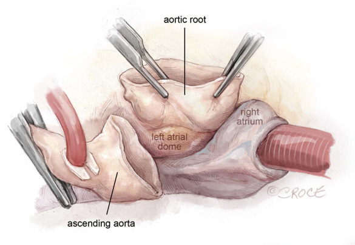
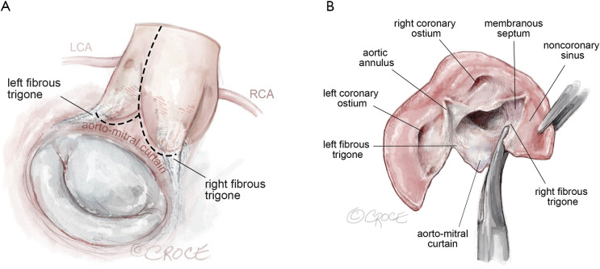
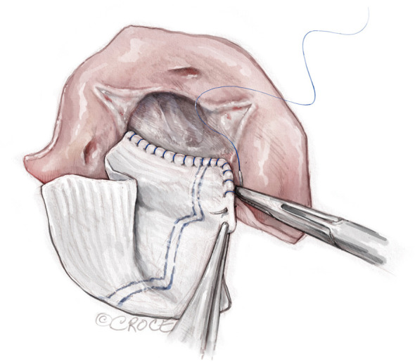
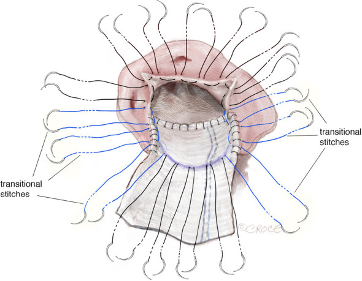
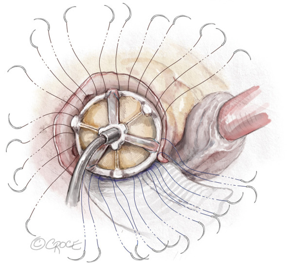
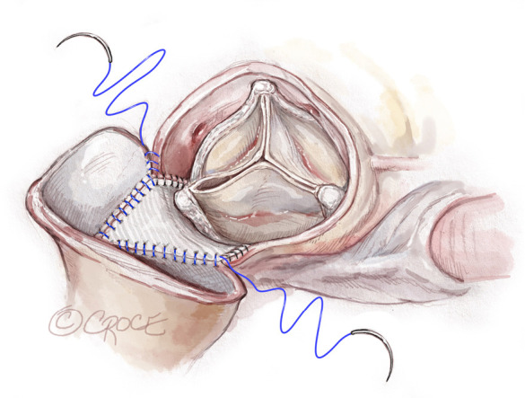
出典: Yang B, et al. Rectangular patch aortic annular enlargement (Y-incision). Ann Cardiothorac Surg 2024;13(3):294-302. doi:10.21037/acs-2023-aae-0151. CC BY-NC-ND 4.0 に基づき原図を改変せず掲載。全 12 ステップは原著参照。
成績（自験例の集積）
- 初回前向き n=50：native 弁輪 median 21mm（女性 70%、BSA 1.93）に対し median 3 サイズ up（最終 size 27 が 54%、29 が 44%）、手術死亡 0%・pacemaker 0%・術後平均圧較差 7mmHg・AVA 1.9 cm²、大動脈基部 27→40mm（Yang, JTCVS 2024）。
- 連続 n=142：手術死亡 0.7%・pacemaker 1.4%・平均圧較差 6–7mmHg・AVA 2.4 cm²・LV mass index 41% 退縮（Yang, Ann Cardiothorac Surg 2024）。
- 累積 n=229：3 年で平均圧較差 5mmHg・EOA 2.7 cm²・iEOA 1.32、HALT 2/229（apixaban で消失）、left coronary torsion 0/229、Y-AAE 後の僧帽弁修復 0/229（Yang "5 misconceptions", Ann Thorac Surg 2026）。米国 STS データベースでも AAE 実施率は 2020→2023 に 8→13%（女性 18→27%）へ急増。
手技上のコツ（提唱者の強調点）
- 矩形パッチを十分な幅で、かつ線維性三角まで確実に届かせること。届かないと 1–2 サイズしか拡大できない。
- Arc modification：矩形パッチ下縁の tensing と前尖の過剰縫合による MR を防ぐため、パッチ短辺に 0.5–1cm 高 × 2–2.5cm 幅の弧を切り抜く（Yang, Ann Thorac Surg Short Rep 2025, n=17 で止血問題なし）。
メリット / デメリット
- ✅ 拡大量が圧倒的（3–5 サイズ）で PPM をほぼ確実に消せる。伝導障害・pacemaker がほぼゼロ、僧帽弁修復もほぼ不要というのが自験データ。
- ✅ 将来の ViV-TAVR に十分な基部径を残せる（§9）。
- ⚠️ 一次エビデンスが BSA 1.9–2.0 の欧米集団・Bo Yang 単一術者・self-referential な引用構造 に依存。BSA <1.6 の日本人小柄例への外挿は未検証。
- ⚠️ short aortomitral curtain の小柄例では central MR の報告あり（§6・§8）。
4.5 現代の変法 —— アジア・小柄例への適応
Y-incision は世界各地で改良が進む。特にアジア圏・小柄例向けの改良は本アトラスの核心に直結する。
① New roof technique（Fuwai / Wang, 2025）
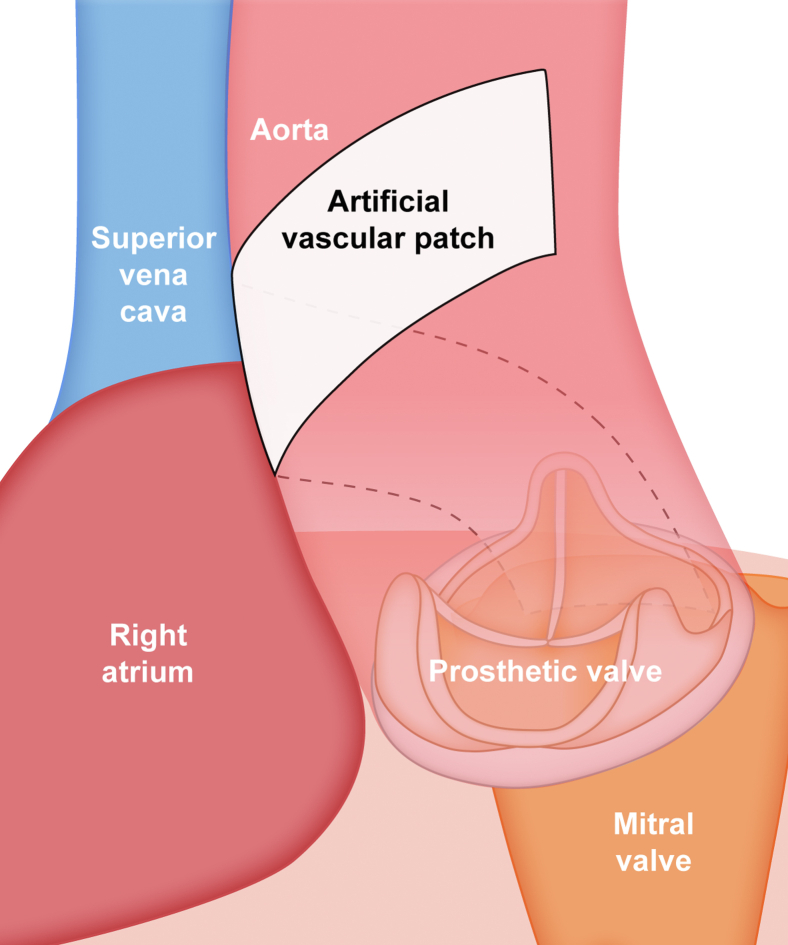
出典: Wang, JTCVS Tech 2025;31:34-38. doi:10.1016/j.xjtc.2025.02.013. CC BY-NC-ND 4.0。
② "Y and I" incision（北里大学 / Kitamura, 2025）— 日本人小柄女性への最適化
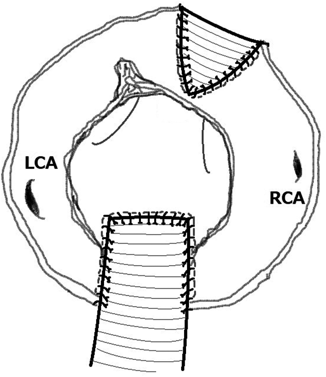
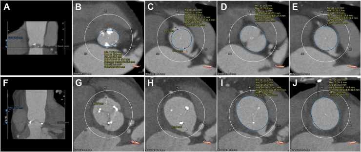
BSA 1.3 m²・弁輪 16.4×23mm・Valsalva 洞高 14.9mm という小柄日本人女性に、後方 Y-incision に前方 I-incision を追加。size 21 Inspiris を留置し、RCA との干渉距離（VTC）を改善した。「後方拡大だけでは前洞と RCA-VTC が改善しない」という Truesdell の所見（下記）を踏まえたアジア特化の改良。出典: Kitamura, Ann Thorac Surg Short Rep 2025;3:1074-1076. doi:10.1016/j.atssr.2025.04.013. CC BY 4.0。
③ その他の技術修正
- Fikani ら（Beirut, 2026）：ウシ心膜パッチ＋心室内 invagination＋外側 reinforcing strip で止血を強化。
- Y-AAE は複雑解剖へも拡張 —— concomitant 僧帽弁手術（Cangut, LA-dome アプローチ）、TAVI-explant 後の salvage（Yin）、右冠尖起始の anomalous LCx 例（Yin, ただし 1/4 で LCx 損傷→修復）、double small annuli への Chimney MVR 併用（Gan, Commando 代替）。
5. メリット・デメリット・拡大量の総覧
| 観点 | Nicks | Manouguian | Konno | Y-incision |
|---|---|---|---|---|
| 切開方向 | 後方（NCC→僧帽弁輪） | 後方（交連→三角→前尖） | 前方（中隔→RVOT） | 後方（交連→両三角、カーテン温存） |
| 拡大量 | 〜1 サイズ | 1–2 サイズ | 原径の約 2 倍 | 3–5 サイズ（中央値 3） |
| 侵襲度 | 低 | 中 | 高（2 パッチ・中隔切開） | 中（拡大量の割に低いと主張） |
| 固有合併症 | 拡大不足 | MR・パッチ破断 | 伝導障害 | short-curtain 例の central MR |
| pacemaker | まれ | まれ | あり得る | 0–1.4% |
| 僧帽弁への影響 | ほぼ無 | あり（前尖切開） | 無 | 温存（自験 MV 修復 0/229） |
| 主対象 | 軽度狭小・小児 | 中等度狭小・AVR+MVR | 先天性超狭小 | PPM を確実に消したい成人 |
| エビデンスの厚み | 歴史的 | 歴史的 | 歴史的・限定的 | 増加中だが単一術者依存 |
| ViV 見据えた基部確保 | 限定的 | 中 | 大 | 大（basal ring 26mm 到達） |
Tanaka ら（2024, 全 216,654 例）は、含まれた術式が Nicks・Manouguian 主体で Konno/Y-incision を用いた研究は 1 つも無いことを明示しつつ、「術式そのものより、弁の upsizing と PPM 回避に成功したかが本質」「マッチは植込弁径でなく術前弁輪径で行うべき」と結論する。つまり "どの術式か" は手段であり、目的は "適切な EOA の獲得" である。
6. 合併症とピットフォール
| 合併症 | 機序 | 関連術式 | 対策 |
|---|---|---|---|
| 僧帽弁機能障害（MR） | 前尖切開・パッチ収縮/破断・カーテン変形 | Manouguian・（short-curtain の）Y | 前尖可動部まで切らない、パッチ幅の適正化、Arc modification |
| central MR（Y 特有） | short curtain への patch augmentation が pouch 状 neo-curtain を形成し乱流が僧帽弁輪を歪める | Y-incision（BSA 1.77・curtain 1.7–1.8cm 例で報告） | 小柄・narrow curtain 例で個別解剖評価、過度な拡大を避ける |
| 伝導障害・房室ブロック | 膜性中隔・His 束近傍の切開 | Konno | 中隔切開範囲を限定、術中モニター |
| 冠動脈干渉/torsion・kinking | 交連の広範切開、LCx 走行異常 | 広範な Y・変則解剖 | 術前 CTA で冠動脈起始を確認、Yin の anomalous LCx 報告を想起 |
| 出血 | パッチ縫合線・大動脈-左房移行部 | Manouguian・Konno | 心膜パッチ、reinforcing strip（Fikani） |
| 拡大不足（PPM 残存） | 三角まで届かない切開 | 保守的 AAE 全般 | 三角まで確実に到達、術中サイザーで nadir 到達確認 |
Ozcelik ら（J Cardiothorac Surg 2026）は、58 歳女性（BSA 1.77・弁輪 <19mm・aortomitral curtain 1.7–1.8cm と短く narrow）に Y-AAE＋size 23 On-X 留置後、即時に重度 central MR を発症し 50 日後に MVR（27mm CarboMedics）を要した初の文献報告を示した。short curtain へのパッチ増生が pouch 状の neo-curtain を作り、乱流が僧帽弁輪を歪めるという機序。BSA 1.77 という borderline body size と短いカーテンはアジア人で頻発しうる ため、「Y-AAE は僧帽弁温存」という一般論を小柄例にそのまま当てはめてはならない。
7. エビデンス —— 比較研究とメタ解析
7.1 Y-incision vs 古典 AAE（Makkinejad, propensity-matched）
Y-incision の中核的比較エビデンスは、Makkinejad らによる Y-incision vs Nicks/Manouguian の傾向スコアマッチ（103 pairs、両群とも median 弁輪 21mm）である。
| 指標 | 古典 AAE（Nicks/Manouguian） | Y-incision | P |
|---|---|---|---|
| 手術死亡 | 4.9% | 2.9% | 0.72 |
| Pacemaker | 2.9% | 0% | 0.25 |
| 植込弁サイズ（中央値） | 23 | 27 | <0.001 |
| 平均圧較差（1 年） | 10 mmHg | 7 mmHg | <0.001 |
| iEOA | 0.86 | 1.05 | 0.002 |
| 中等度/重度 PPM | 23% | 5.5% | 0.039 |
| 重度 PPM | 4.5% | 0% | — |
| 1 年生存 | 95% | 97% | 0.54 |
手術死亡は同等のまま、PPM を 23%→5.5% に低減し、size 19/21 の留置を回避できた（Makkinejad, Ann Cardiothorac Surg 2024）。
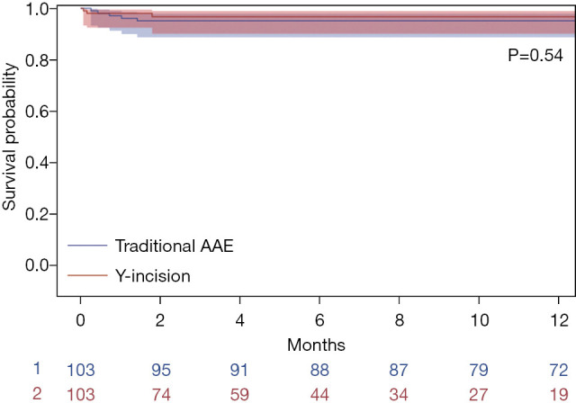
図 7-1. 両群の早期生存に有意差なし（Makkinejad 2024, PMC11148761, CC BY-NC-ND 4.0）。「PPM は改善するが早期生存は同等」という構図はメタ解析（§7.3）と符合する。
7.2 "size 19–21 を許容すべきでない" ── Chen / Hassler の主張
- Chen（Ann Thorac Surg 2025 invited review）は matched-annulus 解析で AAE 群の 6 年生存 98% vs isolated AVR 74%（HR 0.19, P=0.016） を引用し、size 19–21 が手術 OR 11.4・長期 HR 2.05–2.49 の独立リスクであることから「19mm 弁を許容すべきでない」と論じる。
- Hassler（Univ Michigan, Semin Thorac Cardiovasc Surg 2024）は「Nicks/Manouguian は obsolete か？」を問い、Y-AAE 119 連続例（median 弁輪 21mm、女性 67%、BSA 2.0）で手術死亡 0.8%・中等度/重度 PPM 0%・size 27+ を 88% 達成・MR はむしろ改善、と報告。"Y-AAE は Nicks/Manouguian より安全かつ有効" と結論する。ただし follow-up 中央値は 1 年で、long-term durability と ViV 後成績は未検証。
7.3 メタ解析が突きつける「null 寄りの真実」
Tanaka ら（2024）の system review・メタ解析（15 観察研究、全 216,654 例、AAE 7,967 / no-AAE 208,687）は最も網羅的な集積である。
- 未調整では AAE 群の周術期死亡が高い（RR 1.34, 1.02–1.76）が、PSM/調整後はこの差は消失（RR 1.06, 0.69–1.61）。
- AAE は PPM を確かに減らす —— 重度 PPM RR 0.61（0.40–0.93）、中等度以上 RR 0.70（0.58–0.84）。
- しかし予後への翻訳は不確実 —— 中期死亡 HR 1.03、AV 再介入 HR 0.98、心不全 HR 1.06 といずれも有意差なし。
- GRADE は low〜very low、RCT なし、Konno/Y-incision を含む研究はゼロ、Asian subgroup の個別解析もなし。
「AAE は PPM を減らす（機序は確実）」が「延命は未証明（アウトカムは null 寄り）」。そしてアジア小体格に特化した直接エビデンスは不在である。この gap が、日本人での術式選択を "エビデンスの外挿" ではなく "解剖と生理に基づく個別判断" に委ねている。
8. 日本人・アジア人小体格での術式選択
ここが本アトラスの実践的な結論部である。欧米で確立した「PPM を消すために積極拡大」というロジックを、そのまま日本人の小さな体に適用してよいのか。
8.1 解剖学的な「天井」── aortomitral continuity 8mm
Maekawa ら（名古屋大, Artif Organs 2002）は、AVR+MVR＋Manouguian でカーテンを再建する 3 例の幾何解析から、日本人の平均 aortomitral continuity 長 L = 8mm（健常成人 40 例の TTE）を測定した。式 D = L − B/π（D = 2 弁間距離、B = 弁周長）より、2 弁が干渉しないためには 僧帽弁輪拡大を 25mm 未満に制限すべきと定量した。実際 3 例中 1 例で大動脈側機械弁が僧帽弁に押されて dysfunction を起こし、弁回転で解決している。
日本人の aortomitral continuity は約 8mm しかない。Y-incision が前提とする「カーテンに余裕のある基部」は、小柄アジア人では成立しないことがある。short-curtain 例での Y-AAE 後 central MR（Ozcelik）は、この解剖学的天井の臨床的帰結である。拡大量の上限は体格ではなく "カーテンの実測長" が決める。
8.2 「アジアの逆説」と equipment 非依存の PPM 回避
- アジアの逆説：弁輪は小さいのに、PPM の絶対発生率は欧米より低い傾向がある（体格が小さいぶん、小径弁でも iEOA が保てる症例が一定数ある）。「小弁輪 = 要拡大」と機械的に結びつけない。
- Tabata の interrupted suturing（JTCVS 2014）：supra-annular 位に非 everting の結節縫合で弁を高く座らせるだけで、追加パッチなしに PPM を半減できる。器械・パッチに依存しない PPM 回避の第一選択として、拡大の前に検討すべき。
- 17mm 機械弁という別解（Okamura, 17mm St Jude Regent）：超狭小例では 17mm 機械弁が中期成績良好。ただし LVEF が modifier（低左心機能では不利）。
8.3 性差・LVMI・TTE 過大評価という落とし穴
- 女性・小体格に AAE 適応が集中するが、性差の交絡と LV mass index 退縮の解釈には注意。
- TTE は圧較差を過大評価しうる（低流量・不整合流など）。"PPM だから拡大" の判断を経胸壁エコー単独で下さない。CT/カテ・measured iEOA での確認が望ましい。
8.4 実践的アルゴリズム（提案）
以上を統合した、日本人小体格に対する術式選択の考え方を示す。
図 8-1. 日本人小体格を想定した術式選択の考え方（本アトラスの提案・自作）。要点は 3 つ ——(1) 拡げる前に "拡げずに済むか"（Tabata/17mm 弁）を検討、(2) 拡大量の上限はカーテン実測長が決める（short-curtain 例に大幅 Y-AAE を当てない）、(3) 前洞/RCA 干渉が問題なら後方拡大に前方 I を足す（Kitamura Y and I）。
8.5 ViV-TAVR を見据えたサイジング
将来の弁機能不全に対する ViV-TAVR を見据えるなら、初回 SAVR で残す基部径が重要になる。Truesdell ら（paired CTA, n=45、91% が弁輪 ≤23mm）は Y-AAE 後に postop basal ring 26.3mm（native 25.3mm を上回る）・STJ +8.1mm を確保し、ViV に必要な安全域を得たと報告する。ただし RCA の valve-to-coronary 距離 ≤4mm が 36% に残るため、preop sinus <30mm 例では慎重な sizing が必要。
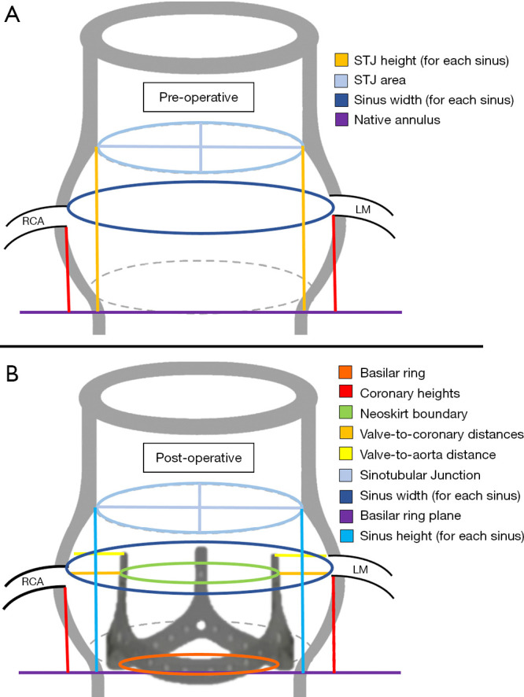
出典: Truesdell, Ann Cardiothorac Surg 2024;13(3):266-274. doi:10.21037/acs-2024-aae-0042. CC BY-NC-ND 4.0。
「19mm は許容か」への解答は、症例による。日本人男性・低左心機能では Masaki らが言うように 21mm 以上を目指す価値がある一方、high-risk・高齢・short-curtain 例では 19mm＋将来の ViV も現実的な妥協点になる。
9. 結論 —— 日本人小体格でどの術式を選ぶか
- まず "拡げずに済むか" を問う。 結節縫合＋supra-annular 留置（Tabata）や 17mm 機械弁で目標 iEOA を満たせるなら、追加侵襲の AAE は不要。アジアの逆説（小弁輪でも PPM 絶対率は低め）を忘れない。
- 拡げるなら、量は "カーテンの実測長" で決める。 日本人の aortomitral continuity は約 8mm と短く、short-curtain 例への大幅 Y-AAE は central MR を招きうる。CT で curtain 長・冠動脈起始を必ず評価する。
- 中等度の拡大には Nicks / modified Manouguian、大幅 upsize と ViV 見据えには Y-incision（前洞・RCA 干渉が問題なら Kitamura の Y and I）。超狭小・先天性には Konno。
- 術式は手段、目的は適切な EOA。 メタ解析が示すとおり、"どの切開か" より "適切な弁径を PPM なく入れられたか" が予後を規定する。マッチは植込弁径でなく術前弁輪径で。
- エビデンスの限界を直視する。 Y-incision の一次データは欧米・単一術者依存で、日本人小柄例への直接エビデンスは無い。だからこそ、日韓多施設の
SAKURA-AVR（AAE-SAVR vs no-AAE SAVR を PSM、measured iEOA と post-AAE MR を評価）のような Asian 特化研究が待たれる。
「小さいから最大限に拡げる」ではなく、「その体・その基部で、PPM を消すのに必要十分な弁径を、最も安全な切開で得る」 —— これが日本人小体格に対する弁輪拡大術の実践原則である。
参考文献（主要）
古典原著
- Nicks R, et al. Hypoplasia of the aortic root. Thorax 1970;25:339-346. PMC472719 / PMID 5452289
- Manouguian S, Seybold-Epting W. Patch enlargement of the aortic valve ring... J Thorac Cardiovasc Surg 1979;78:402-412. PMID 470420
- Konno S, et al. A new method for prosthetic valve replacement in congenital aortic stenosis associated with hypoplasia of the aortic valve ring. J Thorac Cardiovasc Surg 1975;70:909-917. PMID 127094
Y-incision と変法
- Yang B, et al. Y-incision aortic annular enlargement — early outcomes (3-4 valve sizes). J Thorac Cardiovasc Surg 2024;167:1196-1205. doi:10.1016/j.jtcvs.2022.07.006
- Yang B, et al. Rectangular patch aortic annular enlargement (operative atlas). Ann Cardiothorac Surg 2024;13:294-302. doi:10.21037/acs-2023-aae-0151 — CC BY-NC-ND 4.0
- Yang B, et al. Arc modification of the patch. Ann Thorac Surg Short Rep 2025. doi:10.1016/j.athoracsur...
- Yang B, et al. Five misconceptions of Y-incision AAE. Ann Thorac Surg 2026.
- Chen (invited review). Y-incision AAE — rationale, technique, outcomes. Ann Thorac Surg 2025;119:1151-1165. doi:10.1016/j.athoracsur.2025.01.016
- Hassler K, et al. Are Nicks and Manouguian obsolete? Semin Thorac Cardiovasc Surg PedCardSurgAnnu 2024;27:25-36. doi:10.1053/j.pcsu.2023.12.005
- Wang, et al. New roof technique. JTCVS Tech 2025;31:34-38. doi:10.1016/j.xjtc.2025.02.013 — CC BY-NC-ND 4.0
- Kitamura, et al. "Y and I" incision. Ann Thorac Surg Short Rep 2025;3:1074-1076. doi:10.1016/j.atssr.2025.04.013 — CC BY 4.0
- Fikani, et al. Technical modifications of Y-incision. Thorac Cardiovasc Surg 2026. doi:10.1055/a-2836-2224
- Masaki, et al. Modified Nicks in children. Pediatr Cardiol 2026. doi:10.1007/s00246-026-04230-2
- Malfitano, et al. Modified Manouguian technique. J Card Surg 2022;37:574-578. doi:10.1111/jocs.16194
解剖・術式イラスト（本アトラス図版の主要出典）
- Jahanyar J, Said S, de Kerchove L, et al. Aortic root anatomy: insights into annular and root enlargement techniques. Ann Cardiothorac Surg 2024;13:244-254. PMC11148763 — CC BY-NC-ND 4.0（Nicks/Manouguian/Konno/Yang の作図・「どこを切るか」図）
- Fazmin IT, Ali JM. Prosthesis-patient mismatch and aortic root enlargement: indications, techniques and outcomes. J Cardiovasc Dev Dis 2023;10:373. doi:10.3390/jcdd10090373 — CC BY 4.0（切開線ラベル図）
- Yoshioka D, Kawamura A, et al. Mini-Konno procedure for aortic stenosis with small aortic annulus. JTCVS Tech 2026. doi:10.1016/j.xjtc.2025.09.030 — CC BY 4.0（Mini-Konno 手術ステップ）
比較研究・メタ解析・解剖・生理
- Makkinejad A, et al. Y-incision vs traditional AAE (PSM). Ann Cardiothorac Surg 2024;13:255-265. doi:10.21037/acs-2023-aae-0102 — CC BY-NC-ND 4.0
- Makkinejad A, et al. Nicks/Manouguian/Y-incision comparison. Ann Thorac Surg 2025;120:799-805.
- Makkinejad A, et al. Surgeon experience and AAE. JTCVS Open 2025.
- Truesdell, et al. Aortic root dimensions post Y-AAE (paired CTA). Ann Cardiothorac Surg 2024;13:266-274. doi:10.21037/acs-2024-aae-0042 — CC BY-NC-ND 4.0
- Bonini, et al. Hemodynamic (CFD) modeling of Y-AAE. J Cardiovasc Transl Res 2025;18:876-887. doi:10.1007/s12265-025-10634-x
- Ozcelik, et al. Severe central MR after Y-incision (case report). J Cardiothorac Surg 2026.
- Tanaka, et al. AAE outcomes meta-analysis (216,654 patients). Ann Cardiothorac Surg 2024.
- Maekawa, et al. Optimal prosthesis size in Manouguian (aortomitral continuity). Artif Organs 2002;26:833-839. doi:10.1046/j.1525-1594.2002.06970.x
- Tabata M, et al. Interrupted suturing for supra-annular small-annulus AVR. J Thorac Cardiovasc Surg 2014.
- Pibarot P, Dumesnil JG. PPM: definition, clinical impact, prevention. Heart 2006;92:1022-1029.
- Head SJ, et al. PPM and long-term survival (meta-analysis). Eur Heart J 2012.
本アトラス作成: 2026-07-04（2026-07-04 図版改訂：古典 3 法・「どこを切るか」図をオープンアクセス論文の術中イラストへ差し替え）｜ 姉妹レビュー: small_annulus_avr/（AAE 適応論・SAKURA-AVR）・cor_knot/（自動ファスナー手技）｜ 図版はオープンアクセス論文図（CC BY / CC BY-NC-ND、帰属明記）を主に用い、解剖オリエンテーションと拡大量比較のみ自作模式図を併用。CC BY-NC-ND 図は非商用・改変なしで原図のまま掲載している。